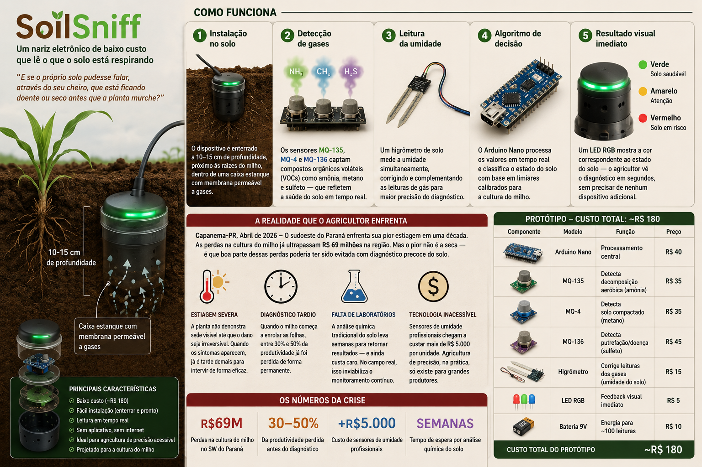

Caixa estanque feita de garrafa PET reciclável ou resina epóxi
Membrana permeável a gás (tecido fino ou papel filtro) na parte inferior
Eletrônica protegida contra umidade com silicone ou verniz acrílico
Enterrado a 10–15 cm de profundidade, próximo às raízes do milho
🖼️ Imagem do Protótipo

Fonte: Imagem gerada por IA
⚠️ Importante: Os sensores MQ precisam de 5–10 minutos de pré-aquecimento antes de fornecer leituras precisas. O firmware já aguarda esse período automaticamente após a inicialização.